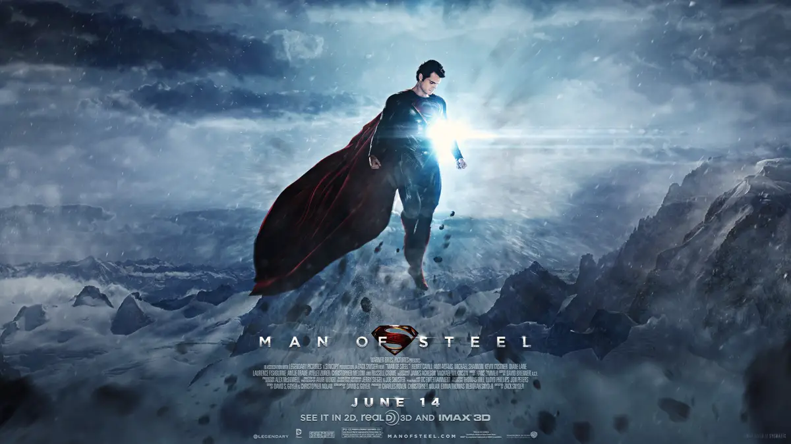
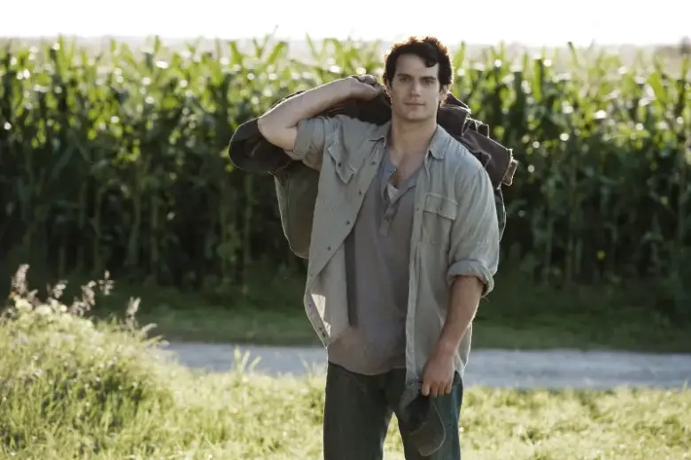
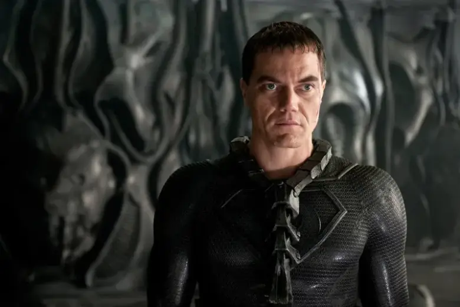

El Hombre de Acero
Producida por Christopher Nolan y dirigida por Zack Snyder, Man of Steel no es la típica película de superhéroes que estabas esperando. Es mucho más que eso. El hombre de acero es una reinterpretación sorprendente y extraordinariamente acertada del relato de uno de los superhéroes más conocidos que nos ha dado el universo de DC Comics.Muchos siempre hemos defendido que cualquier remake es innecesario si no aporta nada con respecto a las anteriores versiones de una misma historia. Más todavía en un caso como el de Superman, creado originalmente en 1932 por Jerry Siegel y Joe Shuster, que verían cómo su personaje saltaba del universo del cómic a la radio, para ampliar su alcance a través de la televisión y las diferentes adaptaciones cinematográficas de las que ha sido objeto -por suerte para ellos ya no verían el desastre organizado por Bryan Singer dado que ambos fallecerían en los años noventa. Sin desmerecer en absoluto la aportación de Richard Donner en su versión de 1978, Man of Steel se coloca desde ya como una extraordinaria reinterpretación del personaje, tan original como fascinante. La mejor para un servidor. ¿Superior incluso a la que Chrisopher Nolan hiciera de Batman? Todavía es pronto para afirmarlo, pero si comparamos la película dirigida por Zack Snyder con Batman Begins, el inicio de la trilogía del hombre murciélago, lo siento mucho, pero gana el hombre de acero.
Cinco son los factores que me llevan defender esta afirmación sin ningún tipo de duda: la capacidad del director para navegar en distintos géneros, el estilo visual de la película, el tono de la narración, la reinterpretación de los personajes y el trasfondo de una película ¡¿indignada?! que se responsabiliza de los preceptos que defiende: dando a la educación la importancia que requiere, siempre a favor de la ecología, más cerca del pueblo que de un gobierno que no escucha o unas fuerzas militares que disparan antes de preguntar y totalmente en contra de la eugenesia y de la religión -a pesar de lo que muchos han proclamado. Y todo esto sin tener la sensación de que estás volviendo a ver lo mismo, que es el eterno problema del cine de superhéroes y su necesidad volver a explicar lo mismo a cada nuevo reboot, tal y como sucede en los de Hulk o Spiderman.
Trailer
Credibilidad y profundidad psicológica en consonancia con ritmo y acción
Todo esto no impide que Man of Steel tenga un ritmo endiablado y vertiginoso manteniendo la coherencia de su premisa inicial y mantiéndonos atentos durante las más de dos horas que dura la proyección que, en ningún momento queda ensombrecida por estas referencias, sino enriquecido y anclado en una manera diferente de narrar una historia de superhéroes.
De entrada, el estilo visual de Man of Steel es rotundamente visceral. Desde el momento del nacimiento de Kal-El, que quizás llegue con más limpieza que el de los humanos -¿y con los pies por delante?-, pero con el mismo dolor, fuerza e intensidad. Un sencillo detalle que establece ese tono verosímil que se extiende a toda la película. Incluso en detalles tan aparentemente nimios como la manera en la que Clark Kent toma constancia de sus poderes, su adaptación a la atmósfera de la tierra o el importante detalle de que vuela -que se representa con precisión inusitada cada vez que rompe la barrera del sonido- o la precisión con la que se muestra el catastrófico desastre que se organiza coo consecuencia del enfrentamiento de Kal-El con Zod y sus secuaces
Un reparto a la altura de las expectativas
Qué duda cabe que la eficacia de este tono de vocación realista recae en el poderoso reparto de la película, comenzando inevitablemente por Henry Cavill, que tiene la suficiente presencia tanto para llevar el traje como para sujetar el peso dramático de la película, pero que quizás no hubiera conseguido el objetivo de no contar con una colección de secundarios extremadamente eficaces. Comenzando por Amy Adams, que nos da un versión de Lois Lane perfectamente ajustada a la realidad contemporánea, pero sobre todo por las aportaciones de Kevin Coster y Diane Lane como sus padres adoptivos y Russell Crowe y, en menor medida, Ayelet Zurer, como los biológicos. El contraste que se ofrece entre las dos parejas, sirve para explicar el dilema al que se enfrenta el protagonista, que debe escoger entre ser Clark Kent o Kal-El… al menos hasta que sepa encontrar un punto intermedio.
Otras presencias estimables son las de Laurence Fishburne o Christopher Meloni, que consiguen aportar en sus breves intervenciones la credibilidad y presencia que requieren sus personajes. Quizás quien me haya defraudado sea Michael Shannon, que ofrece ese perfil de villano más habitual de las películas de superhéroes, pero que quizás hubiera necesitado una aproximación menos exagerada y más cercana al tono de sus compañeros de reparto. Cierto es que la posición de su personaje es diferente pero, de cualquier manera, resulta menos convincente.
